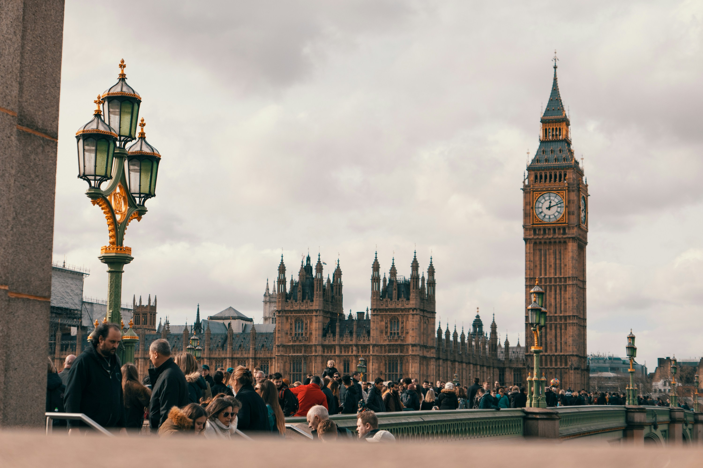

London; City of Timeless History
Ditulis oleh Adindaputrikirana. pada 1 januari 2020.
London, sebuah kota sekaligus ibu kota Britania Raya, merupakan salah satu kota besar tertua di dunia—dengan sejarah yang membentang hampir dua ribu tahun—dan menjadi salah satu kota paling kosmopolitan. Sebagai kota metropolitan terbesar di Inggris, London juga merupakan pusat ekonomi, transportasi, dan budaya negara tersebut.
Jika batas wilayah metropolitan London didefinisikan dengan jelas, struktur internalnya justru sangat rumit dan sulit untuk digambarkan. Bahkan, ciri utama London adalah tidak adanya bentuk keseluruhan yang tunggal. Secara fisik, London merupakan kota polisentrik, dengan banyak pusat distrik dan tanpa hierarki yang jelas di antaranya. London memiliki setidaknya dua (dan terkadang lebih banyak) dari hampir segala hal: kota, wali kota, keuskupan, katedral, kamar dagang, kepolisian, gedung opera, orkestra, dan universitas. Dalam setiap aspek, London berfungsi sebagai metropolis majemuk atau konfederatif.
Secara historis, London berkembang dari tiga pusat yang berbeda. Pertama, permukiman berpagar yang didirikan oleh bangsa Romawi di tepi Sungai Thames pada abad ke-1 Masehi, yang kini dikenal sebagai City of London, “the Square Mile”, atau sering disebut “the City”. Kedua, di seberang jembatan di tepi selatan sungai terdapat kawasan Southwark. Ketiga, sekitar satu mil ke arah hulu, pada lengkungan besar sungai ke arah selatan, berdiri City of Westminster. Ketiga permukiman ini memiliki peran yang berbeda namun saling melengkapi. London, “the City,” berkembang sebagai pusat perdagangan, niaga, dan perbankan. Southwark, “the Borough,” dikenal dengan biara, rumah sakit, penginapan, pasar malam, rumah hiburan, serta teater-teater besar pada era Elizabethan, seperti Rose (1587), Swan (1595), dan Globe yang terkenal di dunia (1599).
Westminster tumbuh di sekitar sebuah biara yang kemudian menghadirkan istana kerajaan dan, bersamanya, seluruh pusat pemerintahan negara Inggris—lembaga legislatif, eksekutif, dan yudikatif. Kawasan ini juga memiliki taman-taman luas serta distrik paling bergengsi untuk tempat tinggal dan berbelanja, yaitu West End. Permukiman di tepi utara sungai mulai menyatu menjadi satu kawasan terbangun pada awal abad ke-17, namun tidak pernah digabungkan menjadi satu pemerintahan kota yang diperluas. City of London menjadi satu-satunya ibu kota di Eropa yang tetap mempertahankan batas wilayah abad pertengahannya. Westminster dan kawasan pinggiran lainnya dibiarkan berkembang dengan struktur administrasi masing-masing—sebuah pola yang kemudian berulang ratusan kali seiring pesatnya pertumbuhan London, hingga kota ini menjadi prototipe metropolis modern.
Jumlah penduduk London telah melampaui satu juta jiwa pada tahun 1800. Satu abad kemudian, jumlah tersebut mencapai 6,5 juta jiwa. Perluasan fisik kota ini tidak dibatasi oleh pertahanan militer—yang sangat berpengaruh di daratan Eropa—maupun oleh campur tangan kekuasaan negara, seperti yang terlihat jelas dalam perencanaan kota Paris, Wina, Roma, dan ibu kota Eropa daratan lainnya. Meskipun sebagian besar lahan di sekitar London dimiliki oleh kaum bangsawan, gereja, dan institusi lain yang berakar dari sistem feodal, perkembangan kota ini digerakkan oleh kapitalisme bebas yang didorong oleh kebutuhan perumahan kelas menengah yang sedang berkembang. Spekulasi pembangunan yang tidak terkendali menelan desa-desa dan kota-kota kecil dalam radius yang semakin luas seiring dengan setiap kemajuan teknologi transportasi dan meningkatnya daya beli masyarakat. Luas kawasan terbangun London tercatat sekitar 5 mil (8 km) dari timur ke barat pada tahun 1750, meningkat menjadi 15 mil (24 km) pada tahun 1850, dan mencapai 30 mil (50 km) pada tahun 1950.
Bentuk alami wilayah London dapat dinikmati dari beberapa titik pandang publik. Hampstead Heath menawarkan panorama terbaik yang menghadap ke cekungan pusat metropolitan. Namun, dari Shooters Hill, Upper Norwood, atau Alexandra Palace, pengunjung memiliki pilihan pemandangan: ke arah dalam menuju cakrawala padat kawasan City dan West End, atau ke arah luar menuju hamparan terbuka wilayah Home Counties, muara Sungai Thames, South Downs, dan Weald. Panorama-panorama tersebut menunjukkan bahwa London, meskipun sangat luas, lebih menyerupai kota metropolitan terbatas pada awal abad ke-20 dibandingkan dengan megapolitan masa kini yang menyebar tanpa bentuk jelas, seperti Tokyo atau Los Angeles. Garis Green Belt pasca-Perang Dunia II membentang dengan cukup alami mengikuti perbukitan yang mengelilingi Cekungan London—punggungan panjang dataran tinggi di selatan London serta, di bagian utara, rangkaian perbukitan yang lebih terputus-putus yang membentang dari Iver Heath (di atas Bandara Heathrow) searah jarum jam melalui Ruislip Common, Bushey Heath, Enfield Chase, Epping Forest, Hainault Forest, hingga South Weald.
Topografi London yang rumit dapat disederhanakan melalui tiga pola dasar. Pertama, terdapat alur berkelok Sungai Thames yang memisahkan London bagian utara dan selatan. Karena alasan historis, sebagian besar tujuan penting berada di sebelah utara sungai. Sementara itu, wilayah selatan pada dasarnya merupakan jalinan rumit kawasan permukiman yang dihubungkan oleh jalan-jalan penghubung biasa yang membentang panjang. Kawasan ini tidak memiliki jalur lalu lintas cepat.
Selain itu, London juga memiliki perbedaan yang jelas antara wilayah timur dan barat. Aliran Sungai Thames serta arah angin yang dominan bergerak ke arah timur. Oleh karena itu, kegiatan pelayaran, angkutan berat, manufaktur, dan kawasan buruh berkembang di hilir sungai, yaitu di East End. Sementara itu, kelompok masyarakat yang lebih makmur dan memiliki waktu luang membangun tempat tinggal serta menikmati kehidupan sosial mereka di West End. Perbedaan sosial ini semakin diperkuat oleh keberadaan istana-istana kerajaan di Westminster, Kensington, Richmond, dan Windsor (yang terletak di luar batas wilayah London). Sebagai akibatnya, sektor barat London memiliki rangkaian ruang terbuka yang tenang dan elegan di kedua sisi sungai, mulai dari St. James’s Park—dekat kediaman perdana menteri di 10 Downing Street—hingga Hyde Park, Kensington Gardens, Battersea Park, Wimbledon Common, Richmond Park, Kebun Raya Kerajaan Kew, tepian Sungai Richmond, Hampton Court Park, dan Bushey Park. Lanskap hijau ini membantu meredam dampak kebisingan, termasuk polusi suara dari jalur penerbangan Bandara Heathrow yang berada di perbatasan barat kota. Kedekatan dengan salah satu bandara internasional tersibuk di dunia tersebut turut memperkuat posisi istimewa London bagian barat.